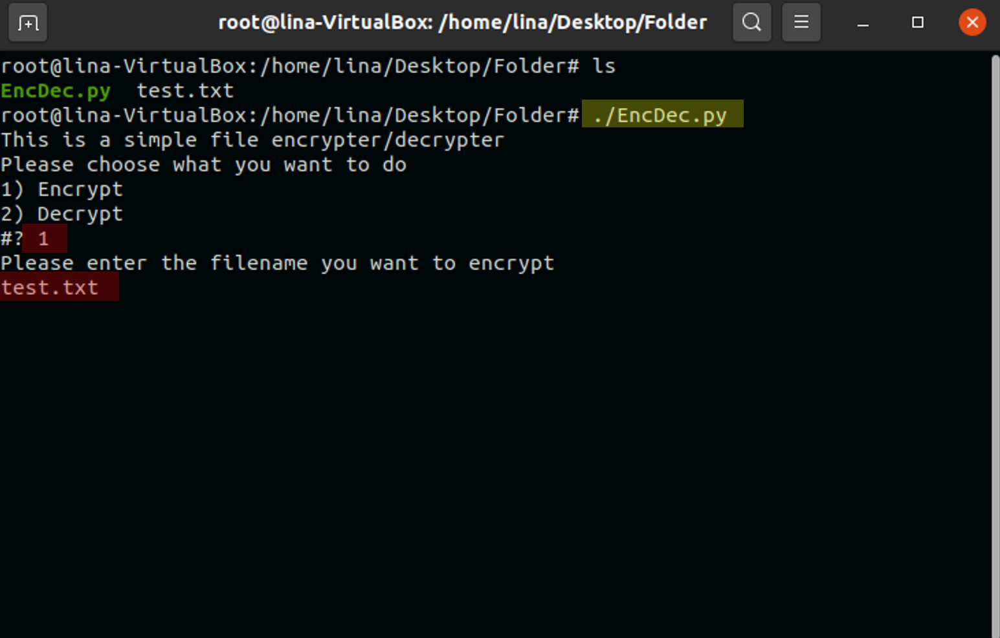

Welcome to my webpage. Here, I will share weekly blogs for my CIT 480 class.
In today’s blog, I will be demonstrating how to encrypt and decrypt files via gpg. Gpg commands, allow you to easily encrypt and decrypt files. I will be writing a python script, in which I will be using gpg commands for the encryption/decryption process.
#!/bin/bash
echo "This is a simple file encrypter/decrypter"
echo "Please choose what you want to do"
choice="Encrypt Decrypt"
select option in $choice; do
if [ $REPLY = 1 ];
then
echo "Please enter the filename you want to encrypt"
read file;
gpg -c $file
echo "The file has been encrypted"
else
echo "Please enter the filename you want to decrypt"
read file2;
gpg -d $file2
echo "The file has been decrypted"
fi
done
1. Make sure to have the script in the same directory as the file that
you would like to encrypt and decrypt. There are currently 2 files in
this directory. EncDec.py and test.txt.
The EncDec.py contains the python script for encryption
and decryption of a file. In this case, EncDec.py
will be used to encrypt test.txt.
2. The following screenshot displays the content of the
test.txt file.
3. Run the script, select option 1, and write the name of the file that you would like to decrypt and press enter.
4. Once you hit enter, you will see a passphrase screen open. Enter a passphrase and enter.